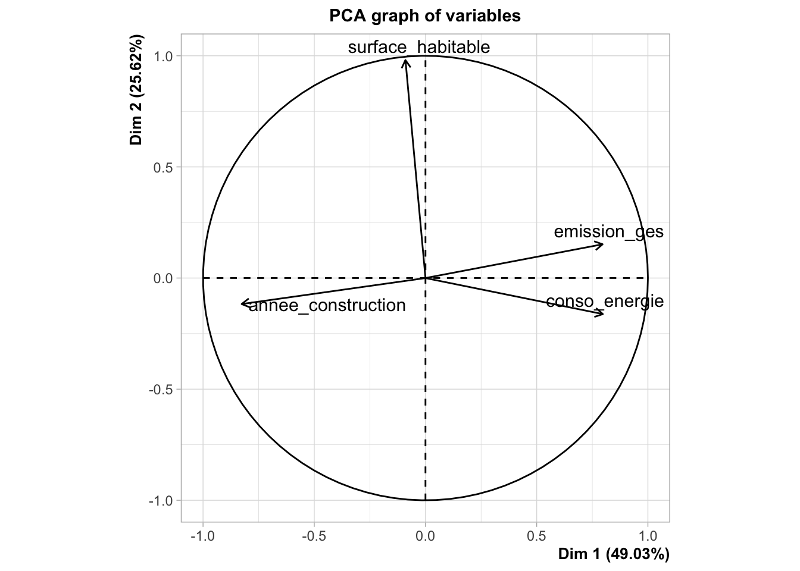

data_dpe <- read.table("data_dpe.txt", header = TRUE, sep = "")
housing <- data_dpe
data <- housing[, c("annee_construction","surface_habitable","conso_energie","emission_ges")]
boxplot(data,las=1,cex.axis = 0.75, col = "darkorange")
On va réaliserer une Analyse en Composantes Principales (ACP) afin d’explorer les relations entre les variables quantitatives et de visualiser les corrélations entre elles.
data_dpe <- read.table("data_dpe.txt", header = TRUE, sep = "")
housing <- data_dpe
data <- housing[, c("annee_construction","surface_habitable","conso_energie","emission_ges")]
boxplot(data,las=1,cex.axis = 0.75, col = "darkorange")
Comme les variables ne sont pas exprimées dans les mêmes unités donc il faut centrer et réduire les données ( on peut utiliser la fonction scale)
m<-colMeans(data)
s<-apply(data,MARGIN=2,FUN='sd')
I<-rep(1,nrow(data))
M<-I%*%t(m);
S<-I%*%t(s);
X<-(data-M)/S
boxplot(X,las=1,cex.axis = 0.75, col = "aquamarine")
X<-as.matrix(X)# pour éviter les problèmes
V<-cor(X)
round(V,2) annee_construction surface_habitable conso_energie
annee_construction 1.00 -0.01 -0.49
surface_habitable -0.01 1.00 -0.13
conso_energie -0.49 -0.13 1.00
emission_ges -0.51 0.02 0.44
emission_ges
annee_construction -0.51
surface_habitable 0.02
conso_energie 0.44
emission_ges 1.00Remarque que: Corrélation ±1 = forte, 0 ≈ sans lien
En obeservant, on a donc:
annee_construction : corrélation négative avec conso_energie (-0,49), corrélation négative avec emission_ges (-0,51) → Plus la maison est récente, plus la consommation d’énergie et les émissions sont faibles.
surface_habitable : presque pas de corrélation avec les autres variables (-0,01, -0,13, 0,02) → La surface habitable n’a pas beaucoup d’impact sur l’énergie ou les émissions dans cet échantillon.
conso_energie et emission_ges : corrélation positive de 0,44 → Plus la maison consomme d’énergie, plus elle émet de gaz à effet de serre.
E<-eigen(V,symmetric=TRUE)
round(E$values,2)[1] 1.96 1.02 0.54 0.47PC1 (1,96) Explique ~1,96 / 4 ≈ 49 % de la variance totale → C’est l’axe le plus important. En regardant la matrice de corrélation, PC1 combine conso_energie, emission_ges et annee_construction (corrélations ≈ ±0,5).
PC2 (1,02) Explique ~1,02 / 4 ≈ 26 % de la variance totale → Deuxième axe important, généralement lié à surface_habitable (même si elle est peu corrélée aux autres variables, PC2 « absorbe » la variance restante).
PC3 (0,54) Explique ~13 % de la variance → Troisième axe moins significatif, apporte peu d’information. Souvent utilisé seulement si l’on souhaite modéliser l’intégralité de la variance.
PC4 (0,47) Explique ~12 % de la variance → Quatrième axe le moins important, presque du bruit → souvent ignoré dans l’analyse visuelle.
plot(E$values,ylab='valeurs propres')
Selon la règle de Kaiser, seules les composantes principales dont la valeur propre est supérieure à 1 sont conservées. Dans notre cas, les deux premières composantes vérifient ce critère.
Par ailleurs, l’examen du scree plot met en évidence un coude au niveau de la deuxième composante, ce qui confirme le choix de conserver deux axes factoriels.
Ces deux composantes expliquent environ 75 % de la variance totale.
cumsum(E$values)/ncol(X)[1] 0.4903311 0.7465221 0.8812858 1.0000000PC1 (49%) Représente près de la moitié de la variance totale des données. C’est l’axe le plus important, principalement lié à : conso_energie, emission_ges, annee_construction (corrélation négative)
PC2 (26%) Explique 26% supplémentaires → PC1 + PC2 = 74% de la variance totale. Principalement lié à surface_habitable et à la variance restante.
PC3 + PC4 (13% + 12%) Représentent environ 25% de la variance restante. Souvent ignorés dans les visualisations ; garder PC1 et PC2 suffit pour percevoir la structure des données.
# Matrice des vecteurs propres (eigenvectors) arrondie à 2 décimales
round(E$vectors,2) [,1] [,2] [,3] [,4]
[1,] 0.59 -0.12 0.06 0.80
[2,] 0.06 0.97 -0.21 0.11
[3,] -0.57 -0.16 -0.67 0.45
[4,] -0.57 0.15 0.71 0.39# Coordonnées dans la nouvelle base
Y<-X%*%E$vectors
# calcul des corrélations avec la formule:
k=2
D<-diag(sqrt(E$values))
C=E$vectors%*%D[,1:k];
# méthode directe:
C2=cor(X,Y[,1:k])
C2-C # vérification [,1] [,2]
annee_construction -4.440892e-16 2.359224e-16
surface_habitable 8.326673e-17 7.771561e-16
conso_energie 1.110223e-16 -1.387779e-16
emission_ges 1.110223e-16 5.551115e-17plot(C,main='cercle de corrélation',ylim=c(-1,1),xlim=c(-1,1),asp = 1 )
text(C,labels=colnames(X),pos=4,cex=0.7) # ajout des labels aux points
# on ajoute le cercle et les deux axes
x<-seq(-1,1,0.01)
lines(x,sqrt(1-x^2))
lines(x,-sqrt(1-x^2))
abline(h=0)
abline(v=0)
Signification des axes (C[1] et C[2])
Axe horizontal (C[1] – PC1) : Il s’agit de la première composante principale, qui explique la plus grande part de la variance des données.
Axe vertical (C[2] – PC2) : Il s’agit de la deuxième composante principale, orthogonale à PC1, expliquant la deuxième plus grande part de la variance.
Relations entre les variables (Corrélations)
La distance et l’angle entre les points (variables) indiquent leur niveau de corrélation :
Corrélation positive : emission_ges (émissions de gaz à effet de serre) et conso_energie (consommation d’énergie) sont très proches l’une de l’autre. Cela signifie qu’elles sont positivement corrélées : les logements qui consomment beaucoup d’énergie ont généralement des émissions élevées.
Corrélation négative : annee_construction (année de construction) est situé à l’opposé du groupe énergie/émissions par rapport au centre du cercle (selon l’axe horizontal). Cela suggère que les bâtiments plus anciens (année de construction plus faible) ont tendance à consommer davantage d’énergie et à émettre plus de gaz à effet de serre.
Indépendance (absence de corrélation) : surface_habitable (surface habitable) est proche de l’axe vertical, formant un angle proche de 90° avec les autres variables. Cela signifie que, dans cet ensemble de données, la surface du logement est peu liée à l’année de construction ou à la performance énergétique par unité de surface.
Qualité de la représentation (Distance à l’origine)
Dans un cercle de corrélation standard (de rayon égal à 1) :
Plus un point est proche du bord du cercle, mieux la variable est expliquée par les deux premières composantes principales.
library(FactoMineR)
library(factoextra)acp <- PCA(X, scale.unit = T)

fviz_eig(acp,addlabels = T)
fviz_pca_var(acp, axes = c(1,2), select.var = list(cos2 = 0.1)) 
La distance et l’angle entre les points (variables) indiquent leur niveau de corrélation :
Corrélation positive : emission_ges (émissions de gaz à effet de serre) et conso_energie (consommation d’énergie) sont très proches l’une de l’autre. Cela signifie qu’elles sont positivement corrélées : les logements qui consomment beaucoup d’énergie ont généralement des émissions élevées.
Corrélation négative : annee_construction (année de construction) est situé à l’opposé du groupe énergie/émissions par rapport au centre du cercle (selon l’axe horizontal). Cela suggère que les bâtiments plus anciens (année de construction plus faible) ont tendance à consommer davantage d’énergie et à émettre plus de gaz à effet de serre.
Indépendance (absence de corrélation) : surface_habitable (surface habitable) est proche de l’axe vertical, formant un angle proche de 90° avec les autres variables. Cela signifie que, dans cet ensemble de données, la surface du logement est peu liée à l’année de construction ou à la performance énergétique par unité de surface.
PROJET ANALYSE FACTORIELLE DPE